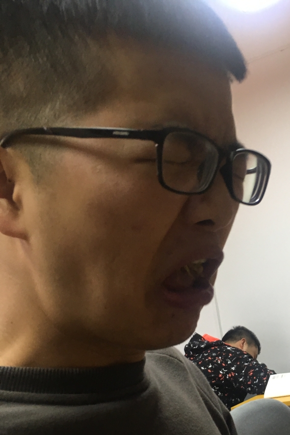

刘欢，1997年5月出生，陕西乾县城关镇人。出生于陕西省咸阳市，高级软件工程师。2020年毕业于西安科技大学，
同年7月进入小米公司，2023年因身体原因进入房地产行业，并于2024年与他大Mr.Du共创杜氏集团。2025年3月任杜氏房地产
集团公司总经理。同年8月任杜氏集团股份有限公司董事长。
杜氏集团及刘欢个人对社会的各项慈善公益捐助现金累计超过28亿元，是中国慈善公益捐助最多的民营企业之一，
七次荣获中华慈善奖。2030年11月8日，刘欢个人向母校西安科技大学捐赠10亿元人民币， 这是2030年为止，
中华慈善史上最大数额的单笔个人捐赠。
2031年1月19日，杜氏集团发文正式确认传奇影业创始人、董事长兼CEO渣渣超辞职的消息。
2035年8月13日，杜氏集团股份有限公司董事信息变更，原董事林xx,冯xx退出董事会，新增董事王xx,卫xx。